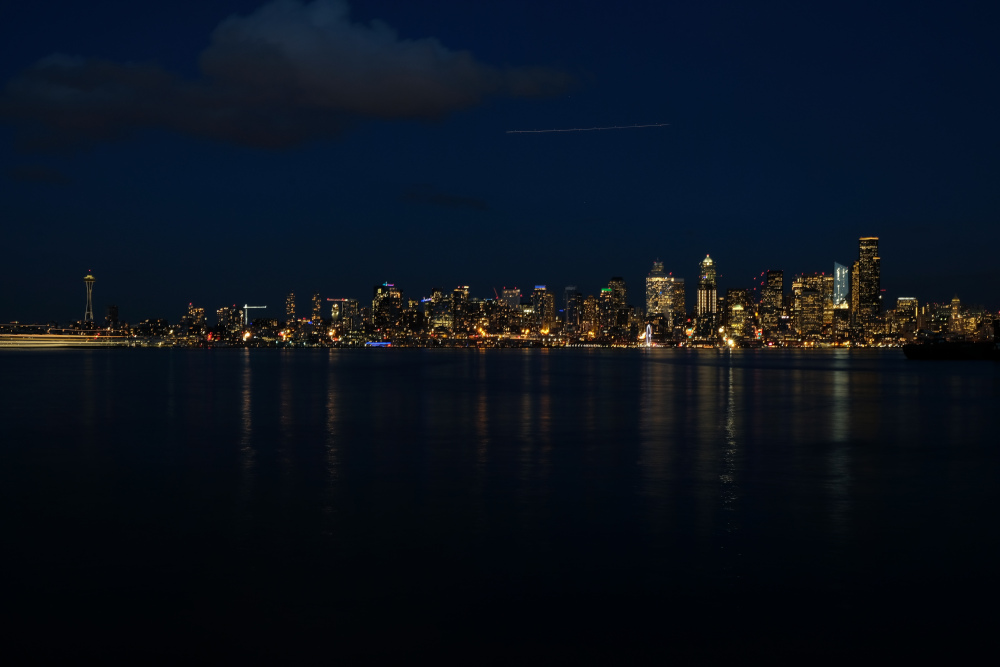
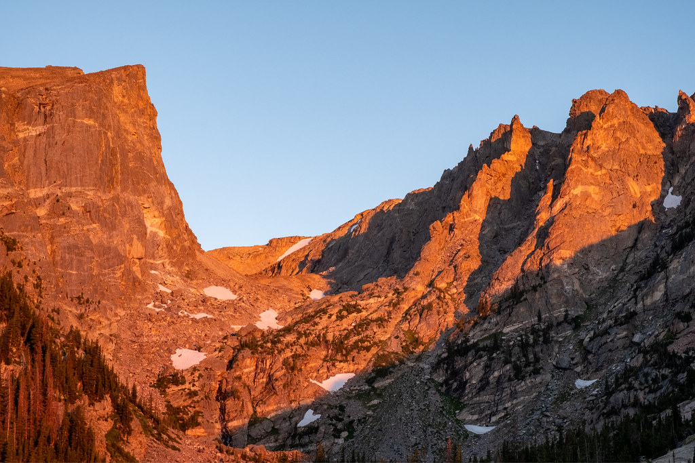
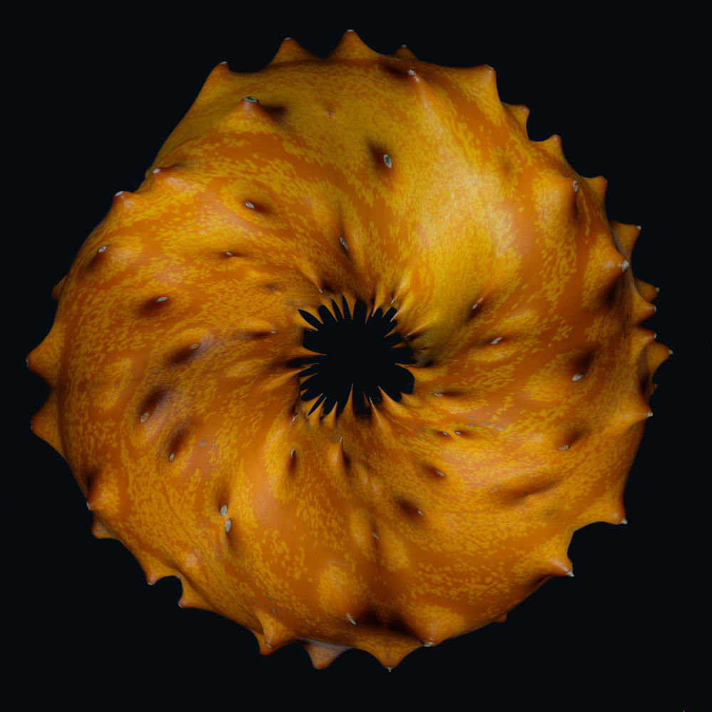
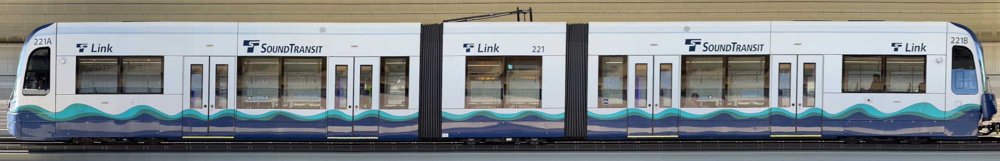
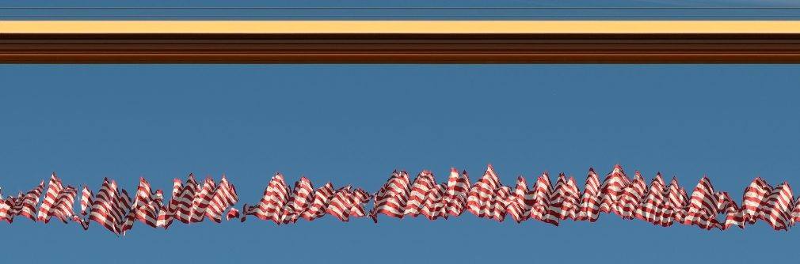
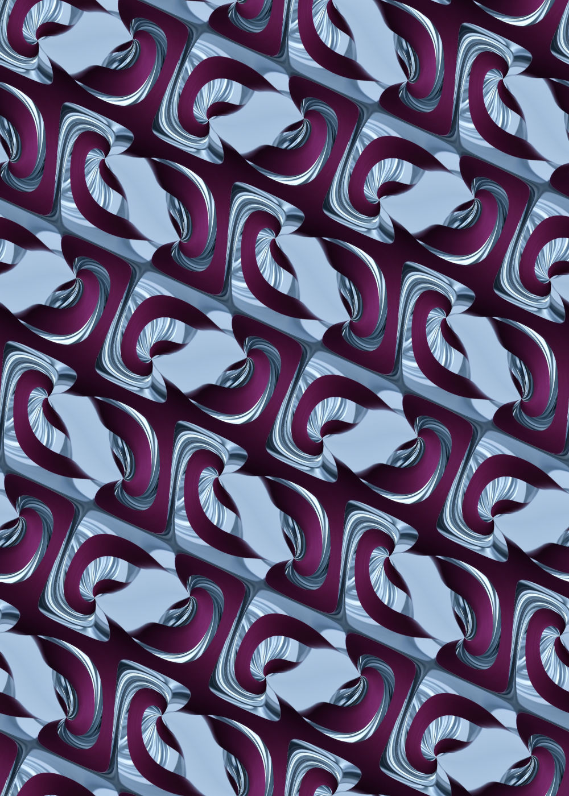
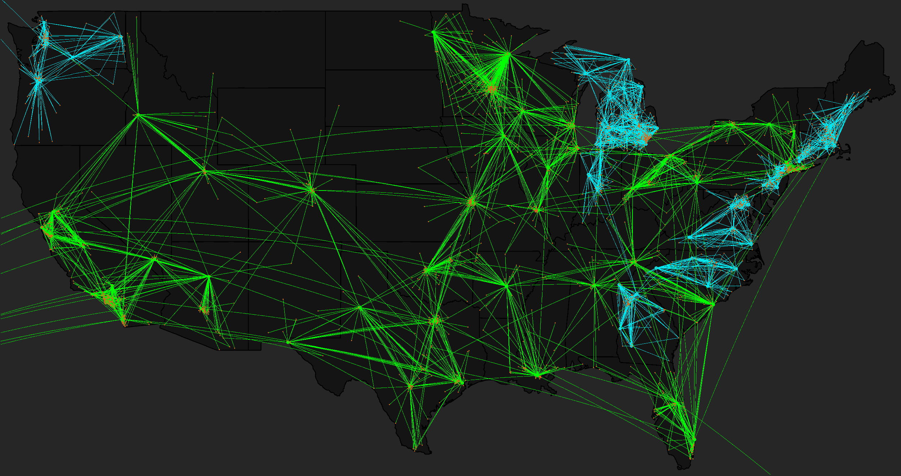
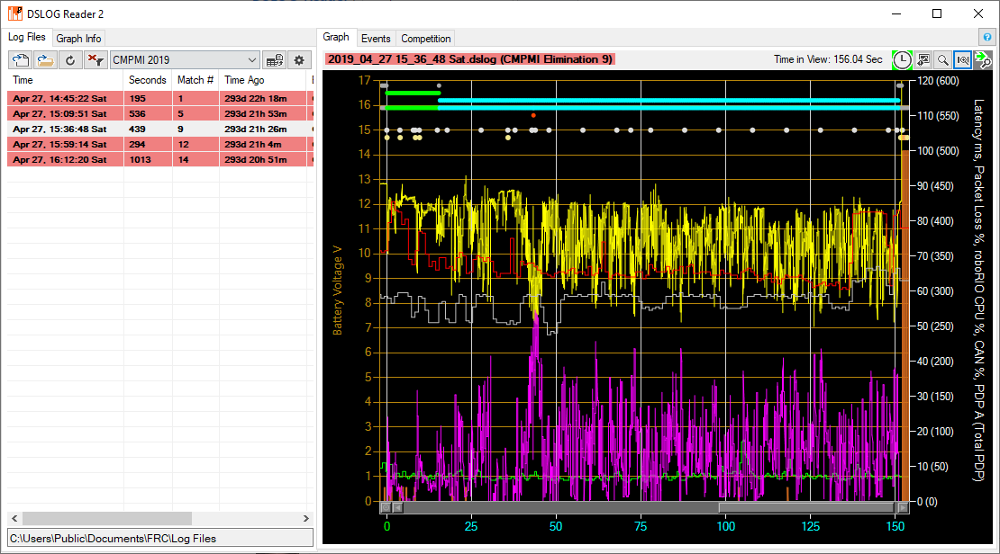
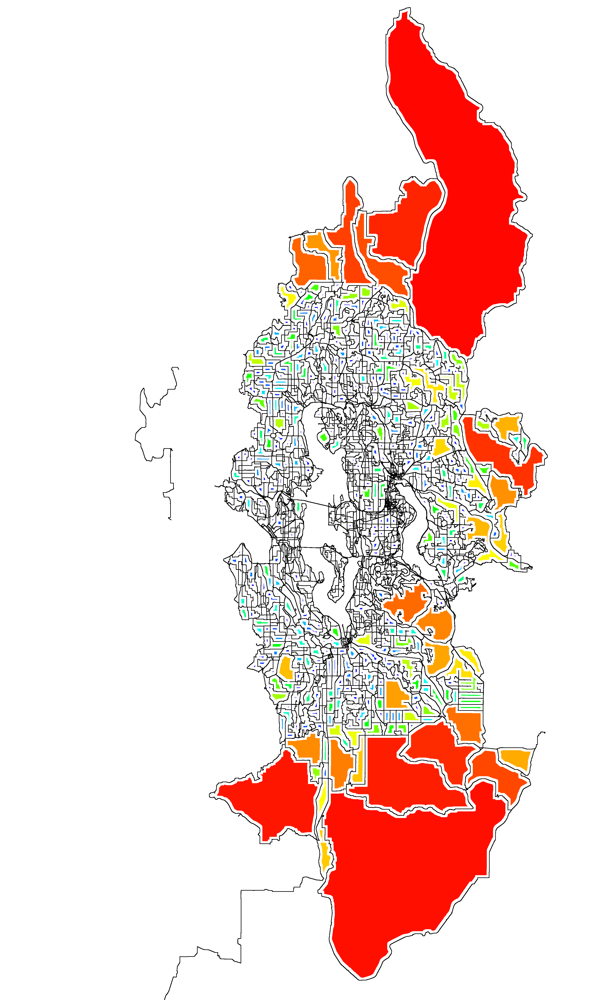

Photography


Scans




Data



---
"We are always in a hurry to be happy...; for when we have suffered a long time, we have great difficulty in believing in good fortune."
- Alexandre Dumas
"Beware of the man who works hard to learn something, learns it, and finds himself no wiser than before."
- Kurt Vonnegut
"From a situation in which nothing can happen, suddenly anything is possible again."
- Mark Fisher